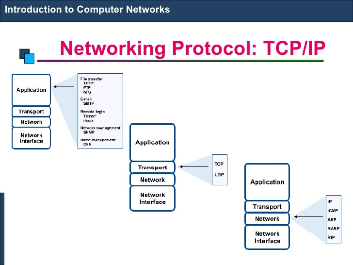
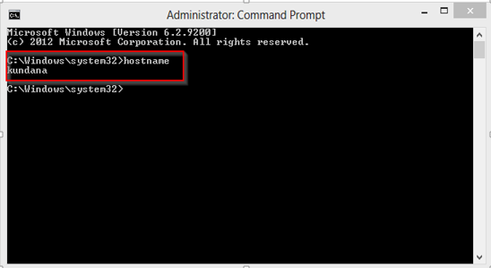
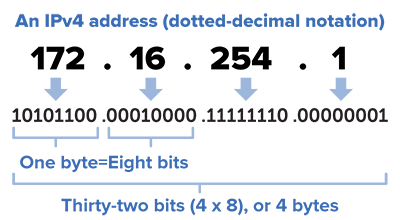
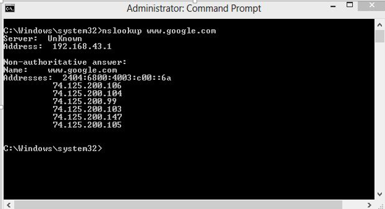
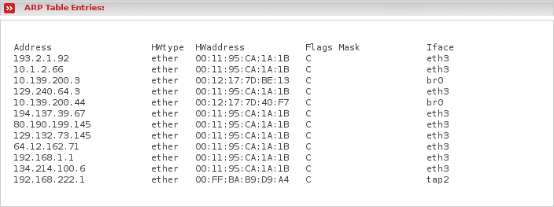

Protocol is the set of rules or algorthims which define the way how two entities can communicate across the network and there exists different protocol defined at each layer of OSI model. Few of such protocols are TCP, IP, UDP, ARP, DHCP, FTP and so on.
UNIQUE IDENTIFIERS OF NETWORK
Host name:
Each device in the network is associated with a unique device name known as Hostname. Type “hostname” in the command prompt and press ‘Enter’, this displays the hostname of your machine.

IP Address (Internet Protocol address):
Also know as Logical Address, is the network address of the system across the network. To identify each device in the world-wide web, Internet Assigned Numbers Authority (IANA) assigns IPV4 (Version 4) address as unique identifier for each device on the Internet. Length of the IP address is : 32-bits. (Hence we have 232 ip addresses available.) Type “ipconfig” in the command prompt and press ‘Enter’, this gives us the IP address of the device.

MAC Address (Media Access Control address):
Also known as physical address, is the unique identifier of each host and is associated with the NIC (Network Interface Card). MAC address is assigned to the NIC at the time of manufacturing. Length of the MAC address is : 12-digit/ 6 bytes/ 48 bits Type “ipconfig/all” in the command prompt and press ‘Enter’, this gives us the MAC address.
Port:
Port can be referred as logical channel through which data can be sent/received to an application. Any host may have multiple applications running, and each of this application is identified using the port number on which they are running on.
Some Important ports are::

DNS Server:
DNS stands for Domain Name system. DNS is basically a server which translate web addresses or URL (ex: www.google.com) into their corresponding IP addresses. We don’t have to remember all the IP addresses of each and every website. The command ‘nslookup’ gives you the IP address of the domain you are looking for. This also provides the information of our DNS Server.
ARP:
ARP stands for Address Resolution Protocol. It is used to convert the IP address to its corresponding Physical Address(i.e.MAC Address). ARP is used by the Data Link Layer to identify the MAC address of the Receiver’s machine.

RARP:
RARP stands for Reverse Address Resolution Protocol. As the name suggest, it provides the IP address of the a device given physical address as input. But RARP has become obsolete since the time DHCP has come into picture.